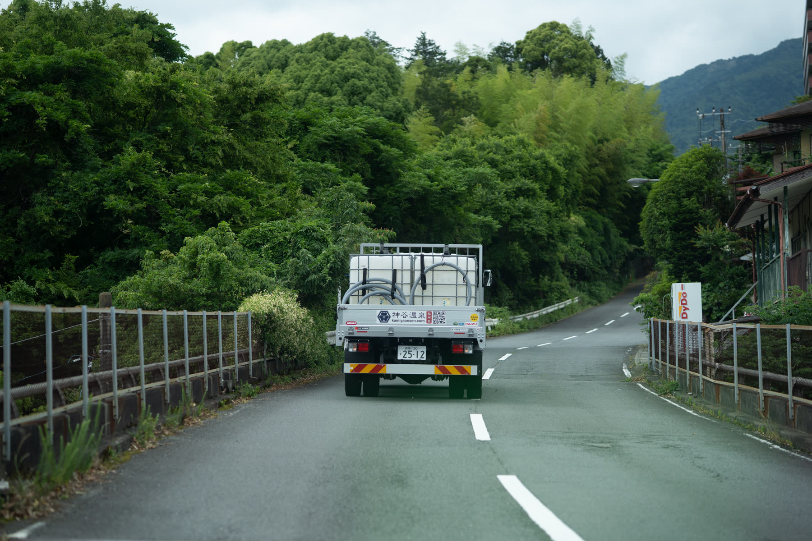
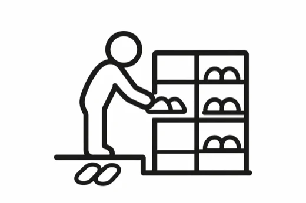
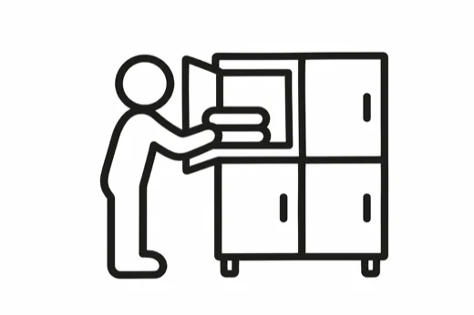
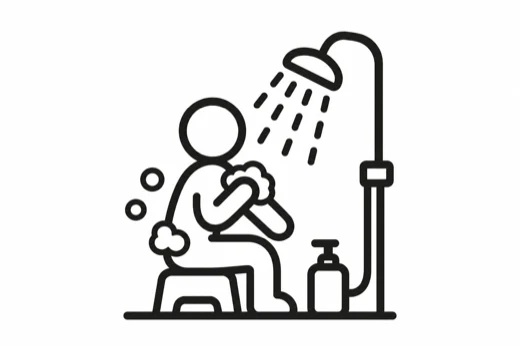
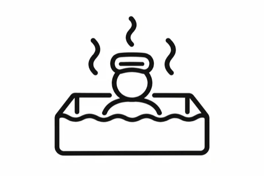
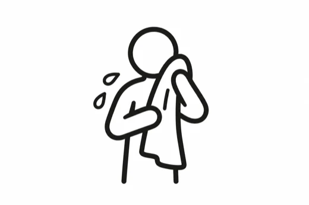

10時から、
翌10時まで。
- 平日
- ¥880
- 土日祝
- ¥980
- 3〜11歳
- ¥330
- 朝だけ
- ¥550
中学生以上。10:00〜23:00。タオルは貸し出し（¥220）、サウナハットとポンチョは無料です。2階のラウンジを使うときは +¥700。
料金をぜんぶ見る入浴料に含まれるもの
大浴場（3階）込み
奥湯河原から運んだ湯を張ります。男女別です。
露天風呂（屋上）込み
ドライサウナ込み
水風呂・外気浴込み
サウナハット・ポンチョ無料
別にいただくもの
タオルセット¥220
バスタオルとフェイスタオル。お持ちいただいてもかまいません。
2階のラウンジ+¥700
館内着とタオルが付きます。畳の小上がり、リクライナー、マンガ。
23:00 を過ぎるとき+¥2,000
短い時間で入る
夜だけ 70分¥700
21:00〜翌5:00 のあいだの70分。日曜の男性と月曜の女性は翌2:00まで。2階はご利用いただけません。
早朝だけ¥550
5:00〜8:30。月曜の男性と火曜の女性は6:00から。3階の脱衣室と浴室のみ、タオルは付きません。


入り方
はじめての方へ。入口から出口まで、12のことをするだけです。館内のお支払いは、お帰りのときにまとめて精算します。
- 1

靴を下足箱に入れる鍵を抜くと、それがリストバンドになっています。館内のお支払いは、この鍵で記録されます。 - 2受付にバンドを見せる使うコースを登録します。ここではまだお支払いはありません。
- 3

3階でロッカーを選ぶ空いているところへ。こちらは下足箱とは別の鍵です。お風呂にはこの鍵だけ持って入ります。 - 4服を脱ぐタオルは持って入れます。
- 5

体を洗う湯船に入る前に、腰掛けに座って洗います。 - 6

湯に浸かる3階の大浴場。奥湯河原から運んだ湯です。 - 7サウナ・水風呂・外気浴屋上へ。入り方はサウナのページに書いています。
- 8

体を拭く脱衣所に戻る前に、しっかり拭き取ります。 - 9髪を乾かす脱衣所にドライヤーがあります。
- 101階へ戻る食事処、リラクゼーション、2階のラウンジへ。そのままお帰りでも。
- 11精算機で精算する下足箱の鍵（バンド）をかざすと、館内で使った分がまとめて出ます。
- 12靴を取って出る精算のときに出たQRを、出口でかざします。
分からないときは、受付でお声がけください。
日帰りの
よくある質問
- タオルは持っていくものですか？
- お持ちいただいてもかまいません。貸し出しは ¥220 です。
- シャンプーやボディソープはありますか？
- 洗い場に備え付けています。
- サウナは別料金ですか？
- 入浴料に含まれています。サウナハットとポンチョも無料でお貸しします。
- タトゥーがあっても入れますか？
- 専用のシール（10×15cm・1枚 ¥220）3枚で隠れる範囲であれば、ご入館いただけます。フェイクタトゥーも同じ扱いです。
- 子どもと一緒に入れますか？
- 3〜11歳のお子さまは ¥330。18歳以上の同性の保護者がご一緒ください。小学生以上の混浴はできません。
- 予約は要りますか？
- 日帰りのご入浴はご予約なしでお越しいただけます。
- どのくらい混みますか？
- 開業後、混みやすい時間帯をこのページでお知らせします。
- 車で行けますか？
- 駐車場をご用意します。台数と無料になる時間は、開業までにお知らせします。


開業のお知らせ
開業日と、ご予約の受付が始まる日を、先にお送りします。お送りするのは開業までのあいだだけです。